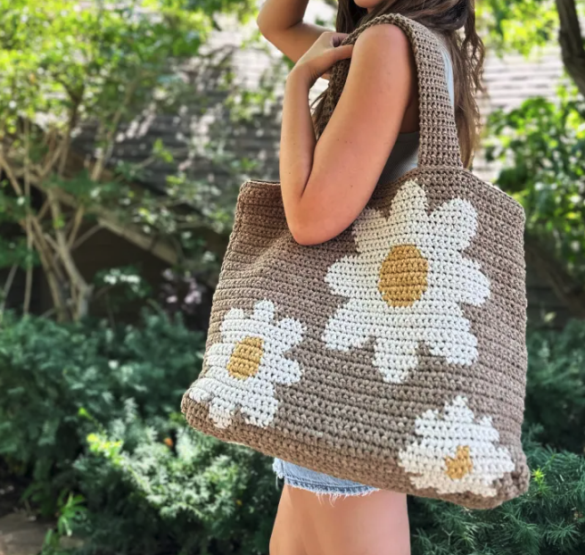

Nuestras Líneas de Productos

Crochet
Bolsos, accesorios y decoraciones tejidas a mano.
Velas Aromáticas
Elaboradas con ingredientes naturales y aromas únicos.

Flores Eternas
Arreglos florales preservados de larga durabilidad.